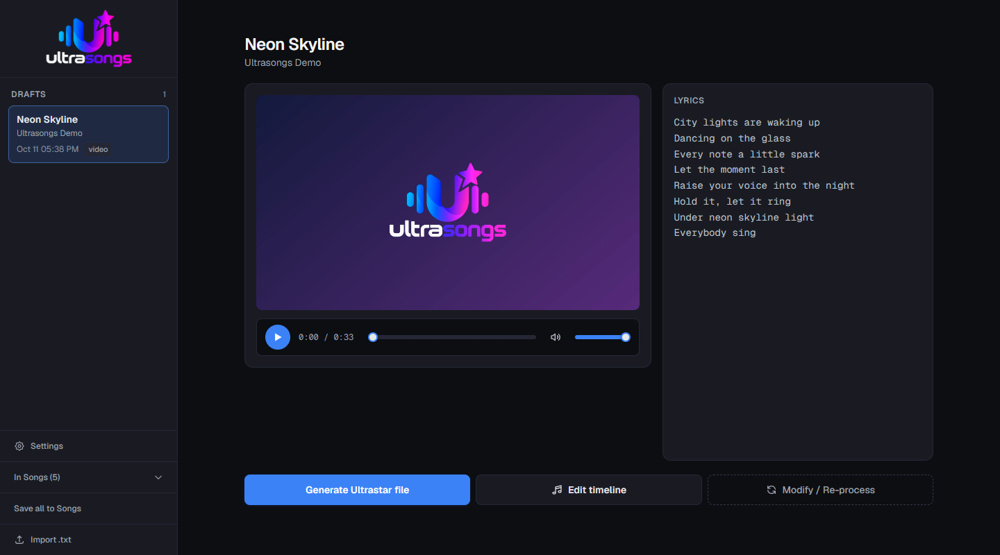
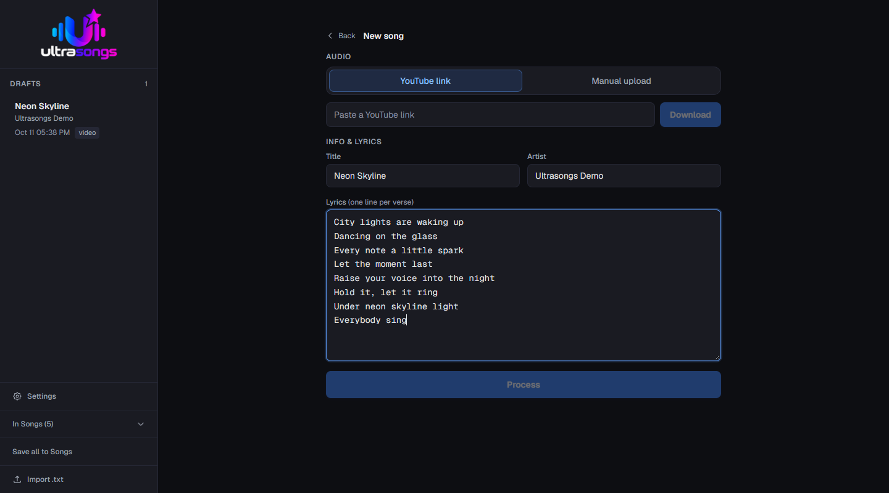
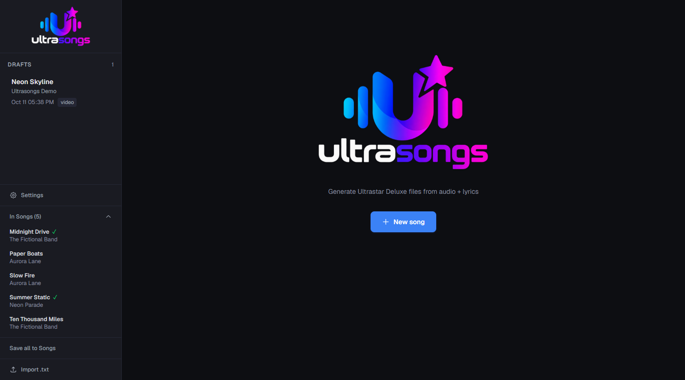

01
Bring your music
Start with an audio or video file, or a YouTube link. Add the lyrics and press play on your next song.

CREATE. SYNC. SING.
That song you want to sing.
Now you can create it, too.
Turn audio and lyrics into songs ready to play. With AI assistance, visual editing, and full control over the result.
Download for WindowsThe first launch downloads AI models (several GB).
Start with an audio or video file, or a YouTube link. Add the lyrics and press play on your next song.
Separates vocals, transcribes lyrics, and detects notes to help bring the voice and music into sync.
Edit notes on a visual timeline, correct the lyrics, and generate your Ultrastar file.

AI + YOUR EAR
Fine-tune phrases, note by note, with a clear, precise visual editor. Listen, adjust, and make every song your own.
Explore the editorHOW IT WORKS
Three steps. One song ready to sing.
Upload an audio or video file, or paste a YouTube link. Add the lyrics.
Ultrasongs separates vocals, detects notes, and aligns the lyrics. All on your computer.
Review the result in the editor and export your song for Ultrastar.
A LOOK INSIDE
From your first idea to your song library.


YOUR NEXT SONG STARTS HERE
Made to sing, share, and enjoy.
The button opens available releases on GitHub.
Your music is processed on your computer.